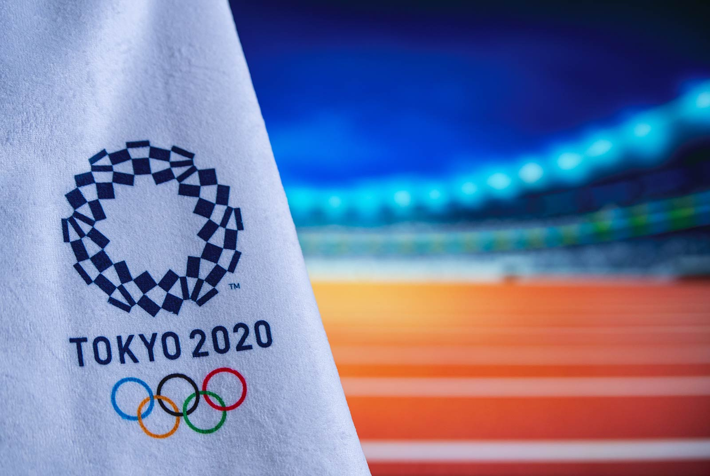
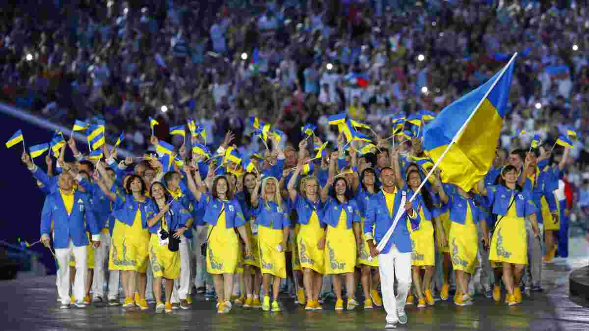
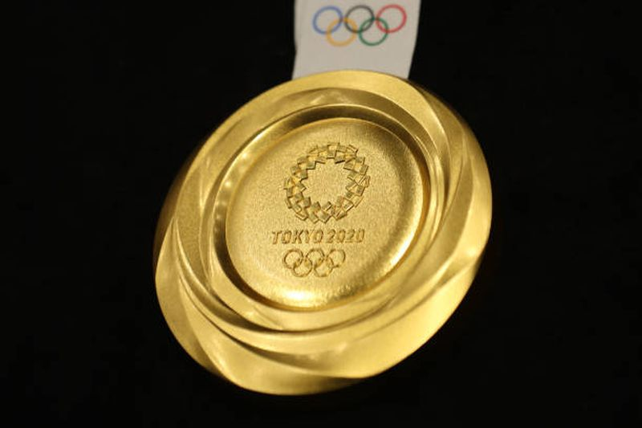

TOKYO 2020
OLIMPICS GAMES
Літні Олімпійські ігри 2020 — тридцять другі літні Олімпійські ігри, які проходили у Токіо. Місце проведення Ігор було визначено на 125-й сесії МОКу у Буенос-Айресі 7 вересня 2013 року. Україну представляє щонайменше 157 спортсменів у 25 видах спорту, що представляють 20 міжнародних спортивних федерацій
Українські олімпійці на токійській Олімпіаді перевершили результат Олімпіади 2016 року в Ріо-де-Жанейро, коли було здобуто 11 олімпійських медалей (2 золоті, 4 срібних та 5 бронзових нагород). За загальною кількістю здобутих у Токіо медалей Україна потрапила до першої двадцятки збірних, зазначає Національний олімпійський комітет України
Перемогу в неофіційному, хоча його всі й уважно відстежують, командному заліку вирвали американці, вони в останній день обійшли спортсменів з Китаю. У олімпійців із США - 39 золотих медалей, 41 срібна й 33 бронзових. У китайців відповідно - 38, 32 і 18 медалей. Третє місце впевнено посіли, продемонструвавши свій найкращий в історії результат, господарі-японці (27, 14, 17), що стало для багатьох сюрпризом.
